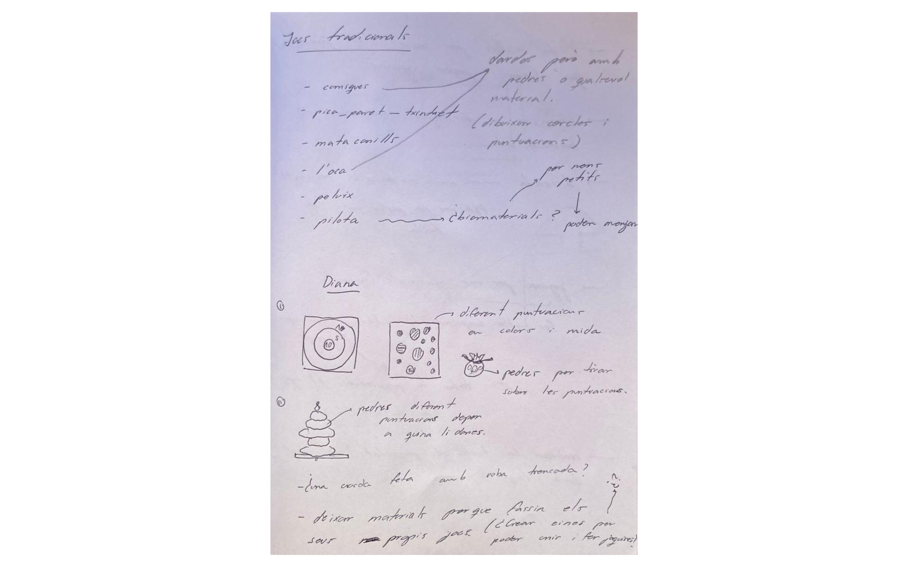
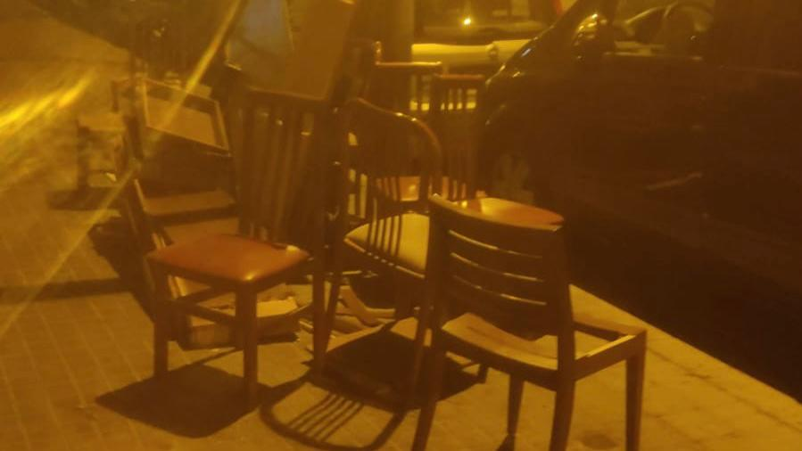
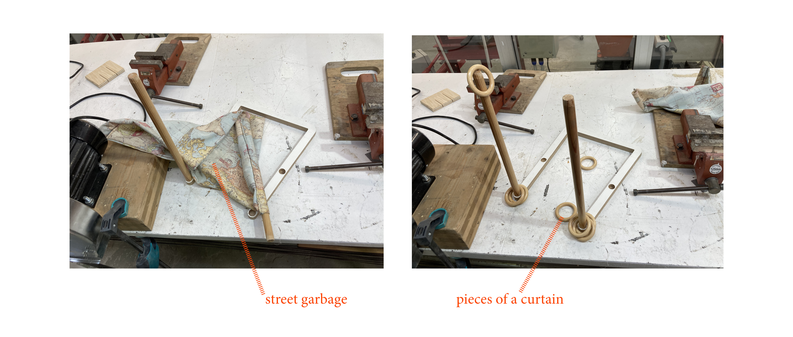
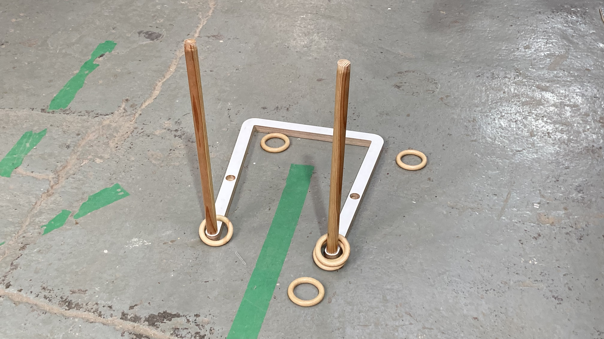
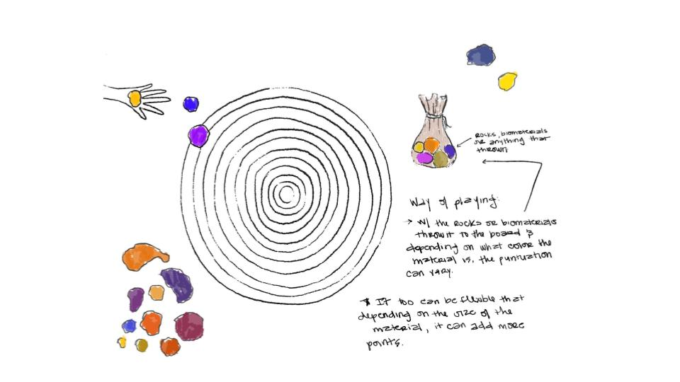
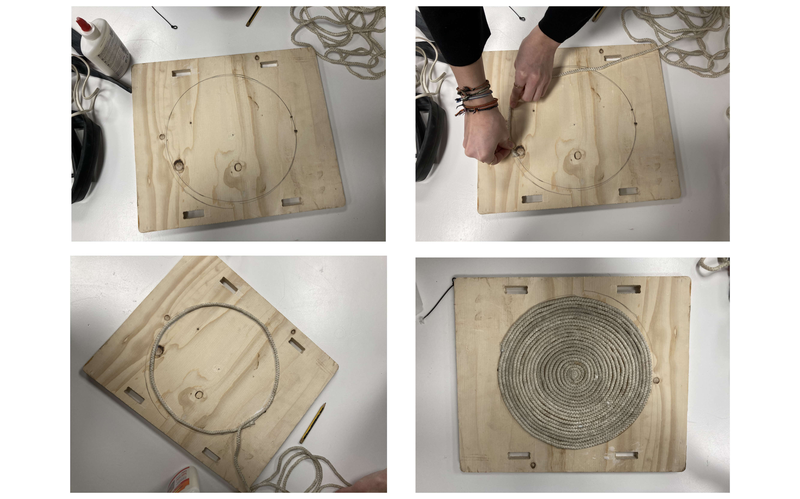
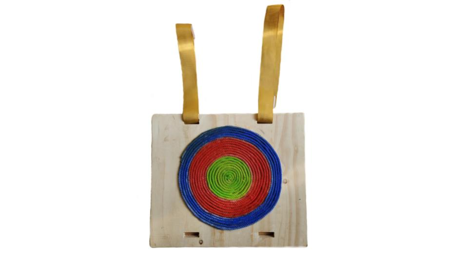

Our common goal is to be able to transform the vision of toys. Even if our group has different perspectives. We want to give a second life to all objects that are already considered waste. To understand the absurdity of consuming materials and forms without giving validity to anything other than function.
1. Brainstorm
To create a game that does not need instructions, we need to think about traditional Catalan games or at least what they are used to playing. In addition, in my opinion we should work with less technology to create connection and reflection of nature. I’ve created a list of the common games I used to play on the streets:
- Marble Game
- Pica Paret
- Mata Conills
- game of the goose
- Ball game
- Darts

2. Find broken furniture or objects
For better management of all the great personal garbage and old or broken furniture each neighborhood of the city of Barcelona has a different day of the week to put the garbage in the streets, between 20h to 22h. Because, after that time a garbage road takes it to continue the waste cycle for free. This is called garbage and furniture days.
According to the schedule map of the Days of junk and furniture, the IAAC is located between two neighborhoods; Pobleu nou on Monday and Dreta i Born on Thursday. In order to have time to build things, George was on Thursday at Dreta i Born walking the streets to check the garbage and give it a second life.

3. Prototyping
Firs design
From an object that George found on the street and some curtain rings that I brought from home, we decided to make a game of dunking the ring on the stick.


Conclusions
It seems that although the rings fit on the stick and there is a margin of error, these are still a little small for the stick. After all, it becomes much more complicated to shoot them. So depending on the age of the people playing is much more fun, but not so much accessible for all ages.

Second Design
In the case of the second design, a similar game was already in mind. A target where from materials that are on the street (or biomaterials) you have to throw them and try to fall into one of the colored circles with different score, which the player decides. Here’s Kai’s sketch, much more elaborate.

The wooden plank came from fab lab waste, the rope was something I was going to throw in my house. We simply draw a circle in the center of the wooden board, and resect it with the string by gluing it with white glue. Kai then painted it and added some strings, taking advantage of the holes that the wood already had, to give the player freedom if he wants to hang it.


Conclusions
When painting the rope this remains much stiffer and the friction force on the materials thrown will therefore be higher, and will make it easier to stay on the bullseye. In other words, it will make the thrown objects less skidding, making the game easier.
4. Analyze the possibility of DIY
Considering all the tools used and the process we follow, we can consider that everyone can reuse all the garbage at home or go looking for objects to create new toys and give a second life.
Although most parents today do not have much time, since parenting and work consume a lot. We think this exercise will be great to do as a family. Not only in a way to teach the power of imagination and independence to create (personify toys), also, as a way to teach the circular economy and reuse materials to benefit our environment.
For all this, we believe that it is an exercise that can be applied in the ideology of DIY. And we invite you if you have some children to try it, and enjoy after the games all together.
5. Next Steps
The next steps we would like to do is to test the toys with different children, as well as bring tools and other materials to create set to parents other toys. And talk so you can see their views and how they think this project can benefit or if in the end it can be useful.